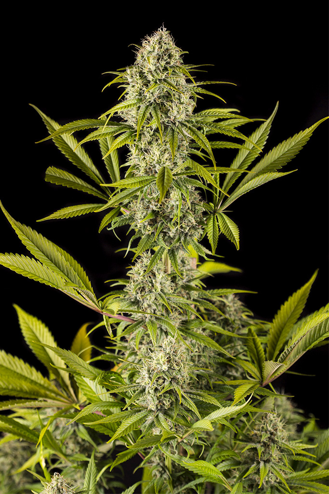
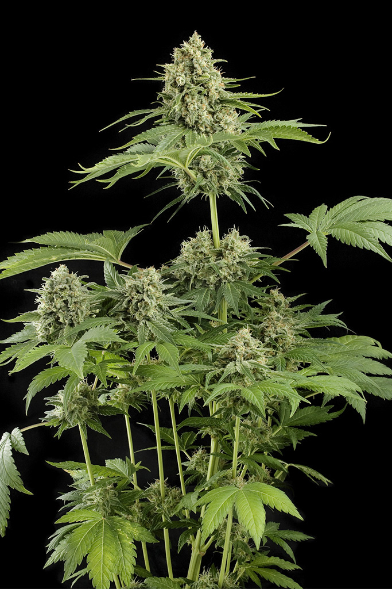
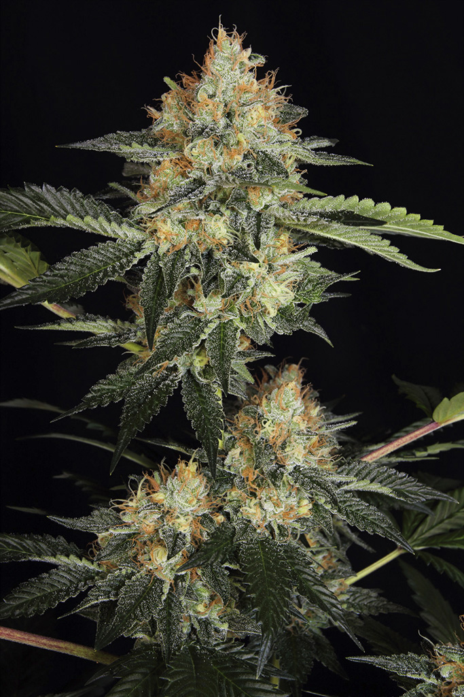
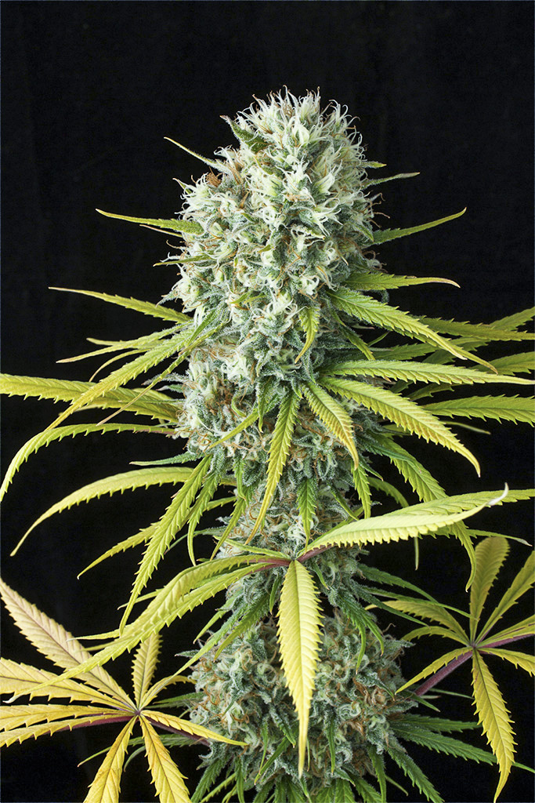
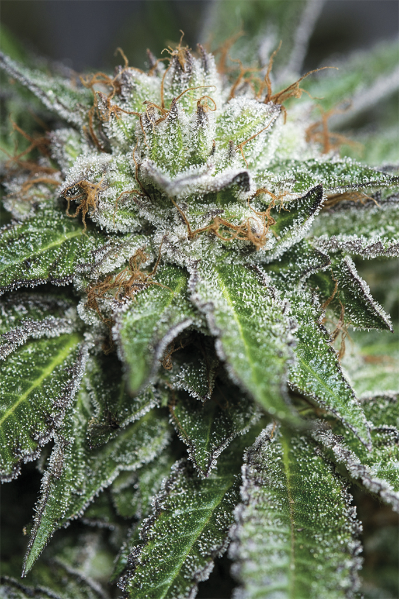
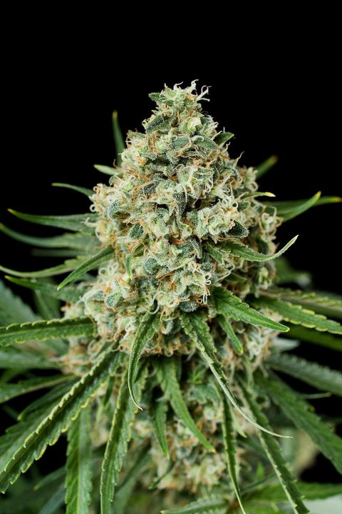

| Nombre | Caracteristicas | Principales compuestos | Beneficios | Efectos adversos |
|---|---|---|---|---|
| Cannabis |
|
|
Dependiendo su tipo y de que manera se consuma, algunos de ellos son:
|
|
La planta de cannabis es considerada de genero monotipico, lo que quiere decir que existe una especie de cannabis. Pero se conocen subespecies denominadas cannabis sativa, cannabis indica y cannabis ruderalis. Sin embargo, en cada planta se encuentran todas las variedades, solo que el porcentaje de una de ellas predomina sobre la otra.
| Subespecie | Historia | Caracteristicas | Efectos |
|---|---|---|---|
| Sativa |
|
|
|
| Indica |
|
|
|
Diferentes tipos de genetica
Genetica Sativa
Super Silver

Royal Haze

Moby Dick

Dinachem

Original Amnesia

Genetica Indica
Bubba Kush

Critical
